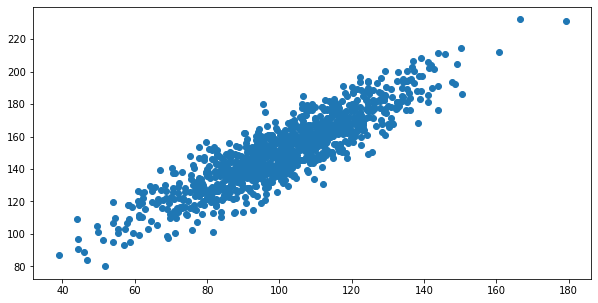
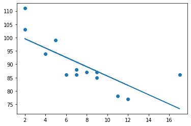
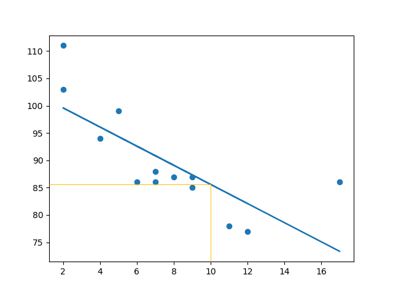
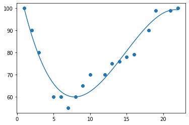
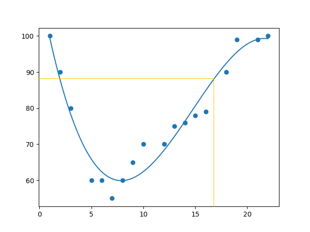

Back to module
Exercise 1 covariance and Pearson correlation plot
Exercise 2 fitted linear regression line
Exercise 2 prediction plot
Exercise 4 polynomial regression fit
Exercise 4 prediction plot
Correlation and Regression
Task
The Unit 3 activity asked me to run four regression notebooks and change values to see how the outputs respond.
Notebook Results
- Covariance/Pearson: covariance
389.755and Pearson correlation0.888. - Linear regression: predicted
85.59308314937454forx = 10. - Multiple regression: changing weight and volume shifted the CO2 prediction.
- Polynomial regression:
R² = 0.9432150416451027and prediction88.87331269697987atx = 17.
What the Activity Demonstrated
The main lesson was that correlation, linear regression, multiple regression, and polynomial regression answer different data patterns.
Evidence





Learning Outcomes
Supports LO1 and LO2 through dataset-based regression work and interpretation of model choice.